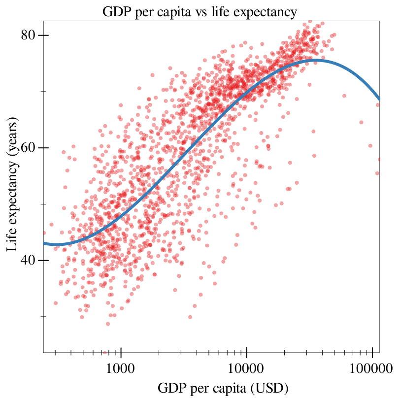

3 Gapminder
All data visualization starts with data to visualize, and we begin with excerpts of data from Gapminder: more specifically, we begin with a CSV dump of the data in the Gapminder library for R. This data is already tidy and in the format we want, so we merely read it in as a CSV using df-read/csv from the data-frame library:
> (define gapminder (df-read/csv "data/all_gapminder.csv"))
> (show gapminder)
data-frame: 1704 rows x 7 columns
┌───────────┬──┬────┬───────┬───────────┬─────────┐
│gdpPercap │#f│year│lifeExp│country │continent│
├───────────┼──┼────┼───────┼───────────┼─────────┤
│779.4453145│1 │1952│28.801 │Afghanistan│Asia │
├───────────┼──┼────┼───────┼───────────┼─────────┤
│820.8530296│2 │1957│30.332 │Afghanistan│Asia │
├───────────┼──┼────┼───────┼───────────┼─────────┤
│853.10071 │3 │1962│31.997 │Afghanistan│Asia │
├───────────┼──┼────┼───────┼───────────┼─────────┤
│836.1971382│4 │1967│34.02 │Afghanistan│Asia │
├───────────┼──┼────┼───────┼───────────┼─────────┤
│739.9811058│5 │1972│36.088 │Afghanistan│Asia │
├───────────┼──┼────┼───────┼───────────┼─────────┤
│786.11336 │6 │1977│38.438 │Afghanistan│Asia │
└───────────┴──┴────┴───────┴───────────┴─────────┘
1698 rows, 1 cols elided
(use (show df everything #:n-rows 'all) for full frame)
Let’s break down this code. The main form is graph, which takes a number of keyword arguments. The #:data keyword argument specifies the data-frame that we want to plot.
The #:mapping keyword argument specifies our aes (standing for aesthetics), which dictates how we actually want the data to be shown on the plot. In this case, our mapping states that we want to map the x-axis to the variable gdpPercap, and the y-axis to the variable lifeExp.
Finally, the rest of our arguments dictate our renderers. In this case, the points renderer states that we want each data point to be drawn as a single point.
> (graph #:data gapminder #:mapping (aes #:x "gdpPercap" #:y "lifeExp") #:x-transform logarithmic-transform (points))
The #:x-transform keyword argument specifies a transform?, which combines a plot transform and ticks. In this case, we use the logarithmic-transform function, which is already defined.
> (graph #:data gapminder #:title "GDP per capita vs life expectancy" #:x-label "GDP per capita (USD)" #:y-label "Life expectancy (years)" #:mapping (aes #:x "gdpPercap" #:y "lifeExp") #:x-transform logarithmic-transform (points #:alpha 0.4))
All we’ve done here is added labels and titles via their eponymous keyword arguments, and added a keyword to the renderer points.
> (graph #:data gapminder #:title "GDP per capita vs life expectancy" #:x-label "GDP per capita (USD)" #:y-label "Life expectancy (years)" #:mapping (aes #:x "gdpPercap" #:y "lifeExp") #:x-transform logarithmic-transform (points #:alpha 0.4) (fit #:width 3))
Note, crucially, that fit takes into account our transform: despite the fit looking linear here, it is actually a logarithmic fit, since it fits on the transformed data.
> (graph #:data gapminder #:title "GDP per capita vs life expectancy" #:x-label "GDP per capita (USD)" #:y-label "Life expectancy (years)" #:mapping (aes #:x "gdpPercap" #:y "lifeExp") #:x-transform logarithmic-transform (points #:alpha 0.4) (fit #:degree 3 #:width 3)) 
> (graph #:data gapminder #:title "GDP per capita vs life expectancy" #:x-label "GDP per capita (USD)" #:y-label "Life expectancy (years)" #:mapping (aes #:x "gdpPercap" #:y "lifeExp") #:x-transform logarithmic-transform (points #:alpha 0.4 #:mapping (aes #:discrete-color "continent")) (fit #:width 3))
Now we’re seeing some notable differences from where we’ve started! We made a scatter plot, transformed its axes, labeled it, and added aesthetics to make it more readable.